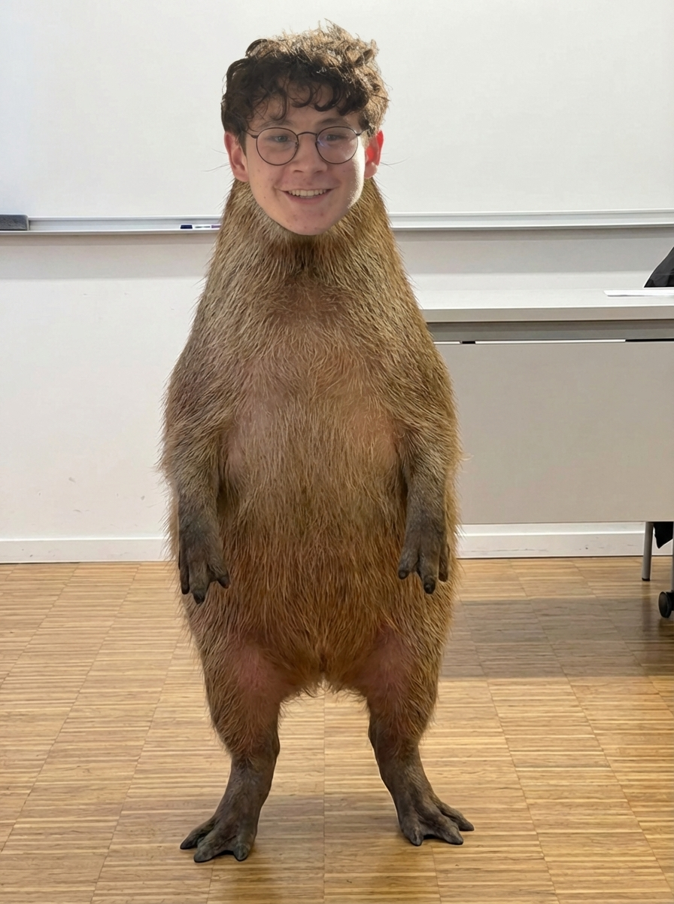

Rescapé d'une ferme où il avait vraisemblablement déjà mangé la moitié des récoltes, ce petit opportuniste n'a qu'une seule chose en tête : la nourriture. Joueur et débordant d'énergie, il sera votre meilleur ami… tant que vous avez des fruits frais dans les poches. Tentez de vous présenter les mains vides et vous découvrirez un regard de déception qui vous hantera à vie. Adoption recommandée aux propriétaires de vergers.